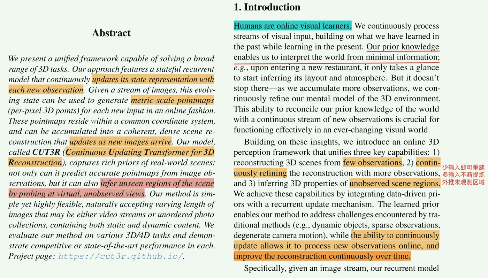
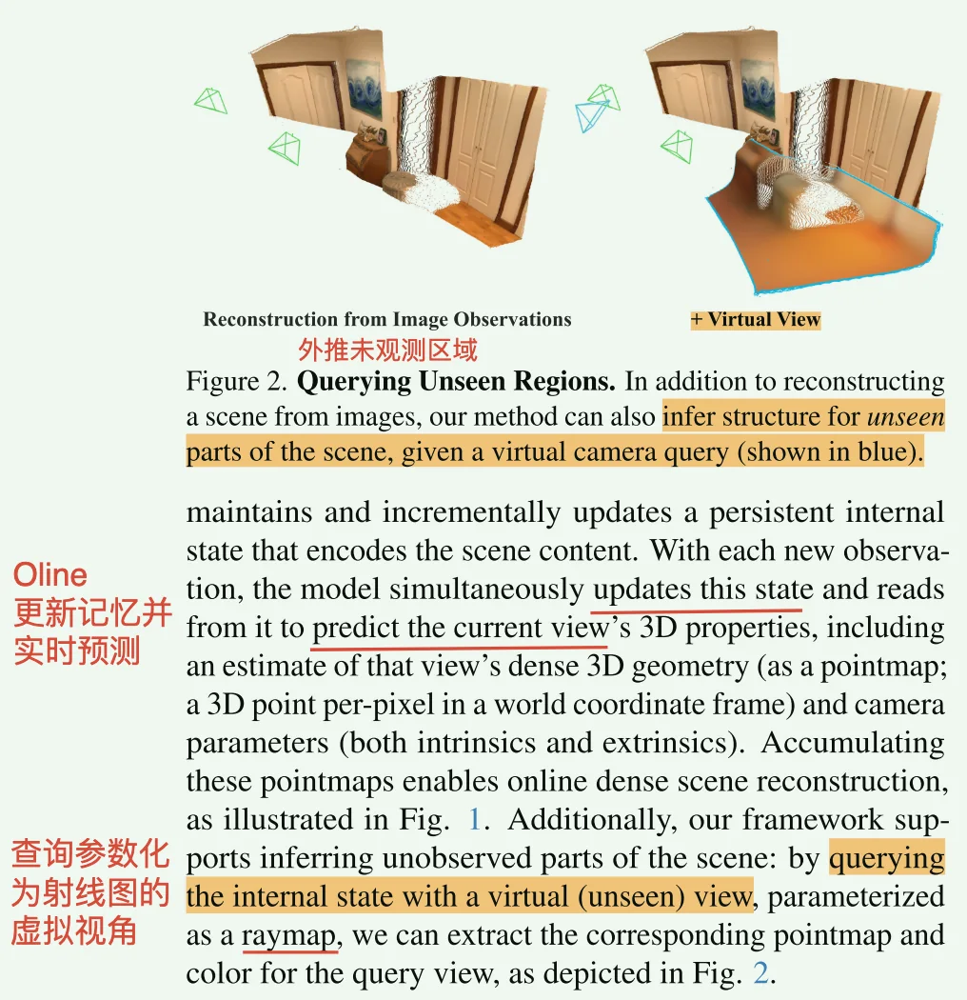
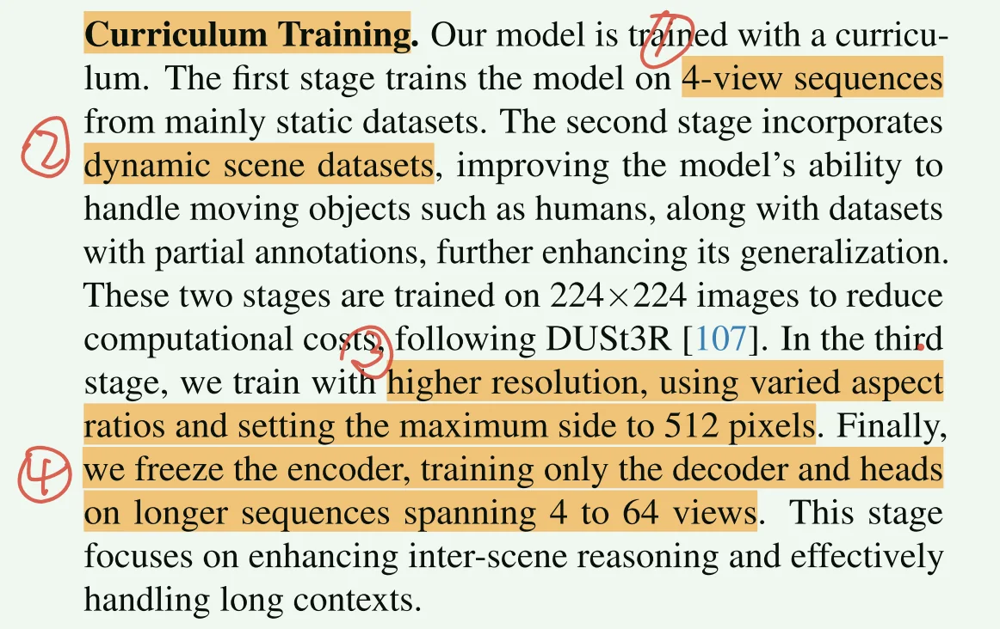
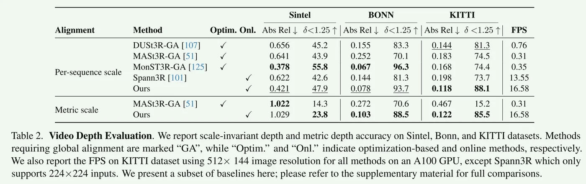
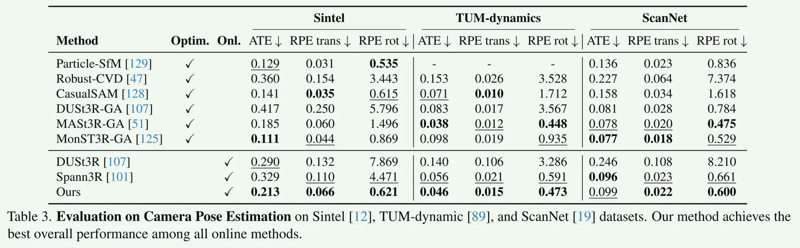
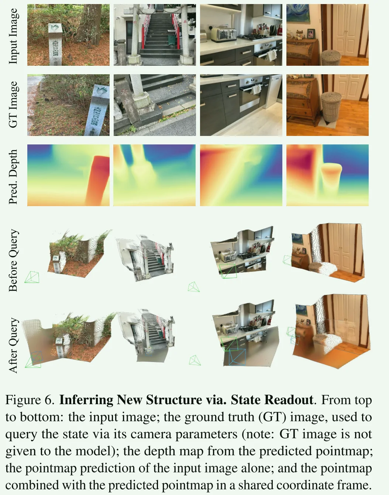

Continuous Updating Transformer（CUT）：维护一个场景状态（固定大小的状态 token），新观测输入 -> 直接检索记忆并更新 -> 预测 pointmap + confidence map + camera pose 并把该帧信息存到记忆中。
用一个固定容量的 latent state，持续压缩并更新对世界的理解。==核心场景的记忆容量固定。==没有显式的全局对齐所以对于超长序列，还是会出现漂移的问题。
state 从一开始学习就存在，从一个空的 token 开始，被特征充斥，然后不断被压缩以及更新（state 由 768个token，每一个token768维组成）。虚拟视角查询时，只读取 state 但不更新 state，这样就不会让假视角，坏信息污染 memory。
顶层数据流： New image -> ViT -> image tokens -> 和 state tokens 做双向交互（1）把当前内容写进 state，（2）从state中读取 memory -> memory 和现有观测一同进入 head 预测得到 pointmap 和 camera pose。 Virtual Pose -> 读 state ->预测 不可见区域。
数据流伪代码：
state = learned_register_tokens()
mem = learned_pose_memory()
for each frame:
# 不论是输入图像还是 virtual view 都编码为 feature 与 state 交互
feat = encode_view(img, raymap)
# 首帧直接赋值一个可学习的默认token，否则在mem里检索一个合适的pose token
if first_frame:
pose_token = learned_pose_token
else:
pose_token = pose_retriever.inquire(global_feat(feat), mem)
# 把 pose 和 image feature 融合到一起
img_tokens = concat(pose_token, project(feat))
# 多层 decoder 进行 feature 与 state 的交互
for l in range(L):
state_new = state_decoder[l](state, img_tokens) # update
img_new = image_decoder[l](img_tokens, state) # readout
state, img_tokens = state_new, img_new
# DPT head 得到 pointmap 和 pose 等信息
output = head(img_tokens_from_multiple_layers)
# 更新 pose 的 memory
mem_new = pose_retriever.update_mem(mem, global_feat(feat), pose_token_out)
# 根据门控判断是否更新 state 和 mem
state = commit(state_new, old_state, update_mask)
mem = commit(mem_new, old_mem, update_mask)
if reset:
state = init_state
mem = init_memPipeline
两个亮点：
- 流式/在线 更新的记忆机制；
- 通过 虚拟视角 探索并重建未观测区域。
1. Introduction


2. Method
Input image simultaneously updates the state with new information and retrieves information stored in the state.
2.1 State-Input Interaction Mechanism
image - ViT encoder - state-readout / state-update - next frame
\[ F_t = ViT(I_t) \] \[ (F_t’,pos_t’),S_t = Update\_Decoder(\ (F_{t},pos),S_{t-1}\ ) \]
pos 是 learnable pose token；
\[ \hat{X}_t^{self},\hat{C}_t^{self} = DPT\_Head_{self}\ (F^`_t) \] \[ \hat{X}_t^{global},\hat{C}_t^{global} = DPT\_Head_{global}\ (F^`_t,pos_t^`) \] \[ [6-DoF\ Pose]:\hat{P}_t = MLP\_Head_{pose} \ ({pos_t^`}) \]
数学上来讲预测这几个是知二求一的，所以是有“冗余”的。但是：
如果通过只预测两个再通过公式来求解第三个，那就很容易误差累积，容易造成难以收敛与 depth 和 pose 估计不准确。
但是显式预测这三个可以让self-pointmap / global-pointmap / pose 三者单独受监督，有利于收敛与误差优化消除。 $$ \hat{X}^{global}_t = \hat{R}_t , \hat{X}^{self}_t + \hat{T}_t,
\quad \text{其中 } \hat{P}_t = (\hat{R}_t, \hat{T}_t) $$
2.2 Querying the State with Unseen Views
CUT3R 中的 state = 模型在前几帧中积累的场景信息。所以我们可以刻意地构造虚拟视角来不断探索与训练模型对于未观测视角的理解与重建能力。(三维下的未见场景补全)
extending the state-readout operation；use a virtual camera as a query to extract information from the state;
把“相机的位置与朝向”编码成网络能理解的：Virtual camera’s intrinsics and extrinsics are represented as a raymap R (6-channel image encoding the origin and direction of rays at each pixel）
为什么要这么编码？(pose matrix - raymap - pose token)
- 模型已经在图像 patch 训练，直接喂 pose 矩阵 transformer 是没法理解的（==没办法和 state tokens 交互==），raymap 参数化可以让 pose 变得和图像一样，那就能用 attention 来理解相机空间分布；
- 虚拟相机只要构造它的 raymap 就可以用同样的机制来从state 中探索对应 pose 的场景了。
raymap: \(R\) 编码得到 token：\(F_r = Encoder_r(R)\)；
把 \(F_r\) 作为 query ，state 作为 memory ，通过一个与 state-image 共享权重的 decoder 来执行 cross-attention 并输出更新后的表示 \(F^`_r\) 。(注意：只读不写)
通过主网络的Head就可以输出得到 pointmap / confidence map等；并且新增了 \(Novel\_view\_Head\) 来输出未观测视角渲染的图像。
2.3 Training Strategy
四阶段训练：
8 A100 NVIDIA GPUs each with 80G memory

3. Experiments
视频深度估计：

位姿估计：
未观测视角重建-消融实验：
4. Limitations
- CUT3R 每帧只与前面已有 state 交互，不重新全局优化所有帧。虽然能够实时但是会有长期漂移。小误差（pose、尺度、深度）在长序列中会慢慢累积。(缺少记忆回环)
- 考虑BA
- CUT3R 是 stateful transformer，本质近似一个带记忆的 recurrent model。每一步都要把当前帧code并和state cross attention然后更新state。这样时间复杂度要比标准的 feed-forward transformer 成本高。
- 这没办法，除非换方案。